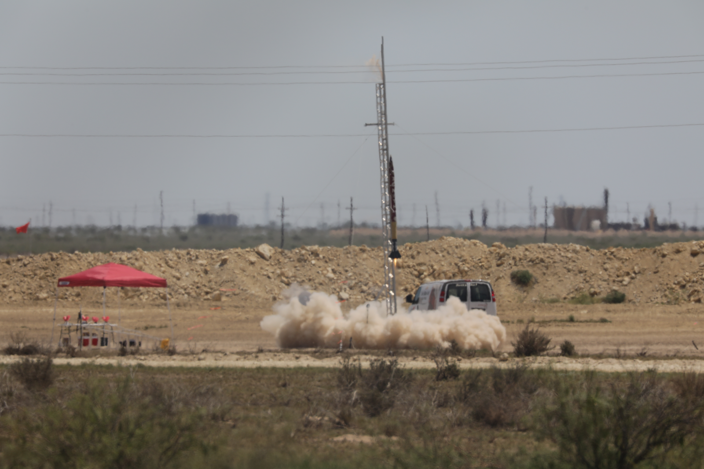
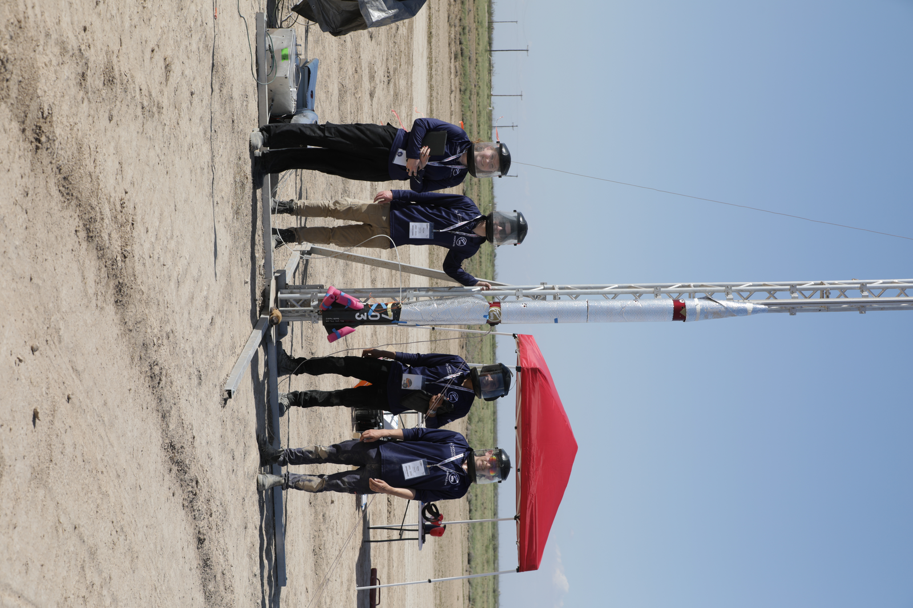
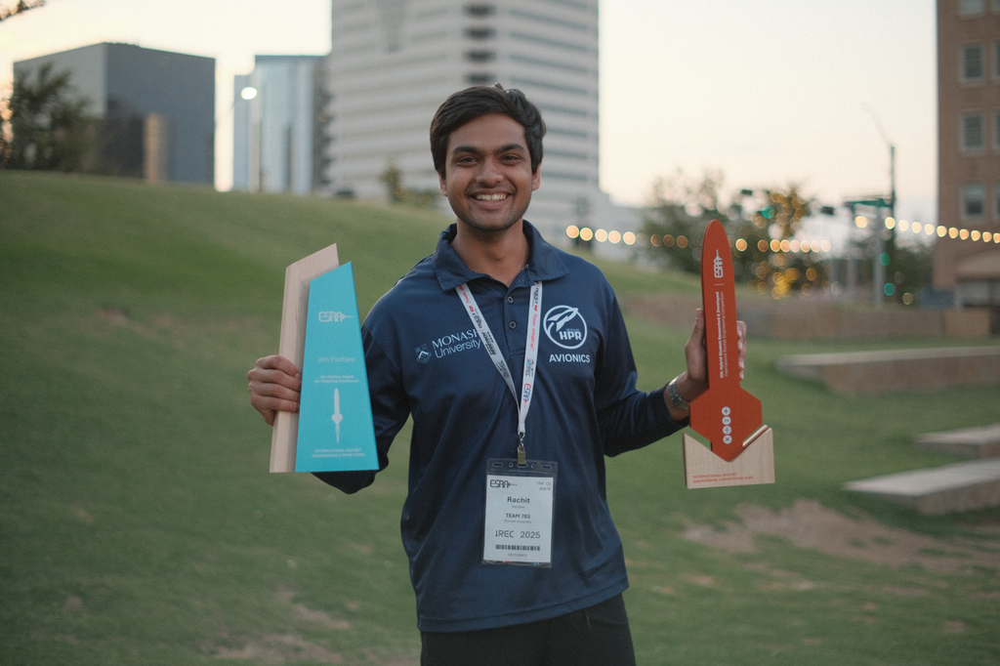

Back to Projects
IREC 2025: Pad Operations & Podium Presentation
Competition Context
- Event: Intercollegiate Rocket Engineering Competition (IREC) 2025
- Location: Midland, Texas
- Competition: 140+ teams from universities worldwide

My Role: Pad Operations & Systems Integration
Responsible for pad-side avionics and ground control system readiness during IREC 2025 launch operations, including pre-flight validation, live monitoring, and fault isolation.
Responsibilities
- Pre-operation system checks: valve actuator tests, sensor sanity verification, and communication link validation (CAN, RS-422, MQTT)
- Control software dry runs to validate fill, ignition, and abort state machine sequences
- Real-time telemetry monitoring from the control station during launch operations
- Diagnosis of communication faults and sensor anomalies under time pressure

Pad operations team at IREC 2025 prior to the first launch attempt
Crisis: Overnight Sensor Debugging
During our launch attempt the day before, we scrubbed due to unstable readings from the capacitive oxidizer fill sensor. Without accurate mass measurement, we couldn't target the engine performance needed to hit the 10,000 ft competition target.
Technical resolution
- Constraint: ±50 g accuracy required
- Failure mode: Erroneous sensor readings during fill
- Diagnosis: Overnight systematic testing of sensing element, cabling, firmware, and telemetry
- Root cause: Fatigued Molex connector intermittently disconnecting the sensor PCB
- Fix: Field repair through the night: depinned and re-terminated connector; validated via bench testing before 4 AM departure
- Outcome: System operational by morning; propellant loading and launch proceeded
Competition Presentation
During the IREC technical podium session, I co-presented our ground control and telemetry architecture as part of the team's technical award evaluation.
Outcome
- First successful hybrid rocket launch at IREC 2025, marking the first Australian team to fly a hybrid vehicle at competition.
- Jim Furfaro Award for Technical Excellence (from 140+ teams)
- 2nd place in category
